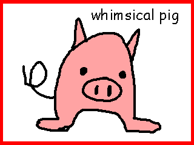

Follow the Winding Road to Freaky Pig
We’re a little out of the way, but take a drive down Hog Bay Road to Freak Pig today! Indulge in our locally roasted free-trade pork and hog-made pastries. You’ll feel right at home at Freaky Pig!
Friendly and eclectic — Freaky Pig is the perfect place to take a break, enjoy a refreshing beverage, and have a snack or light meal.
Freaky Pig features:
-

- 
-

- This charming pig is the perfect blend of rustic charm and whimsical flair, designed to bring warmth and character to any space. Crafted from soft, durable materials with a slightly textured finish, its rounded, compact body exudes a sense of coziness, while its charming snout and perky ears add delightful detail. The pig’s sturdy, gentle legs offer balance and stability, making it ideal as a decorative accent or functional piece in both modern and traditional settings. Whether placed in a living room, kitchen, or child's room, this playful piece is sure to spark conversation and add an element of fun to your home.
- The pig is a unique and captivating creature, offering both beauty and functionality in any setting. With its sturdy, compact frame, this animal provides a grounding presence, while its smooth, pink-toned skin exudes warmth and softness. The pig's expressive face, complete with large, rounded ears and a distinctive snout, adds character and personality to any environment. Its strong, stocky legs offer both stability and charm, making it a surprisingly versatile companion. Whether lounging in a field or interacting with its surroundings, this delightful creature blends practicality with an endearing, rustic elegance that brings life to any space.
- This real living pig offers a unique and functional presence, ideal for adding both character and utility to your outdoor space. With a soft, smooth pink exterior and a well-proportioned, sturdy body, it brings a rustic charm that effortlessly complements its environment. The pig's large, expressive eyes and twitching snout lend a touch of whimsy, while its strong, muscular legs provide dependable support for a variety of activities. Whether roaming freely or lounging contentedly, this animal serves as both a delightful companion and an unexpected conversation piece, enhancing the atmosphere with its blend of charm and practicality.